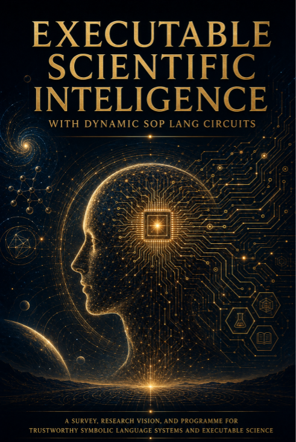

Executable Science & Research · Axiologic Research Editions
Executable Scientific Intelligence
with Dynamic SOP Lang Circuits
What would scientific automation look like if a fluent answer were never mistaken for an executed argument? Enter a proposed architecture where models generate candidates, deterministic runtimes build bounded circuits, and every authoritative result must expose its dependencies, limits, and provenance.
From a transcript to a research object
Scientific work still circulates mainly as prose even when it rests on data, code, models, simulations and chains of evidence. Language models make that prose easier to search and transform, but a convincing transcript can hide where a claim came from, which check ran, which alternative was ignored and whether the system stopped because evidence was enough or because its budget expired.
This book proposes a possible missing layer: a human-readable, machine-executable intermediate representation called SOP Lang. Instead of allowing unrestricted language to execute directly, it can be progressively compiled into declarations and small task-local circuits whose values, dependencies, alternatives, resources and stopping conditions are explicit.
The central research problem
Can a persistent symbolic system choose the right small computation? The hard question is not merely syntax. It is dynamic circuit construction: activating a relevant bounded slice of a potentially vast knowledge base without scanning everything or losing provenance.
Where do neural models belong? They may interpret difficult language and propose candidate artefacts, while deterministic parsing, testing, verification and promotion decide what becomes operational.
Can science remain plural and inspectable? The programme studies peer review, literary analysis, specification generation and agentic systems precisely because each mixes evidence, interpretation, uncertainty and authority differently.
A trustworthy symbolic language system is judged by whether it can construct the right bounded computation and preserve the status of every intermediate result.
A research instrument, not an oracle
The book is candid about status. Its prototypes demonstrate bounded symbolic methods, persistent catalogues, candidate artefacts, provenance receipts and abstention; they do not constitute a finished theory of language or a replacement for scientific communities. The proposed value is a more inspectable boundary between proposal, evidence, verification and human decision.